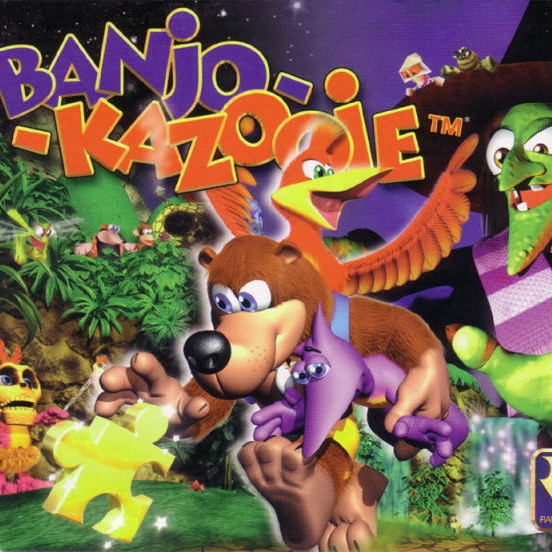

| Banjo-Kazooie | |
|---|---|
|  | |
| Developer: | Rare |
| Publisher: | Nintendo |
| Release Year: | 1998 | Composer: | Grant Kirkhope |
Game Description
Banjo-Kazooie is a 3D platformer adventure game, developed by Rare and originally released on the Nintendo 64. This game follows a bear and bird duo Banjo and Kazooie, as they try to stop the evil witch Gruntilda from swapping bodies with Banjo's sister, Tootie.
Banjo-Kazooie's soundtrack was composed by Grant Kirkhope, and was his first solo project with publisher Rare. The soundtrack pushed the limits of the Nintendo's 64 hardware and is highly memorable due to its simple, yet very catchy melodies. A signature feature of this soundtrack is the use of tritones that according to Kirkhope, were highly used to reflect Banjo and Kazooie's opposite personalities.